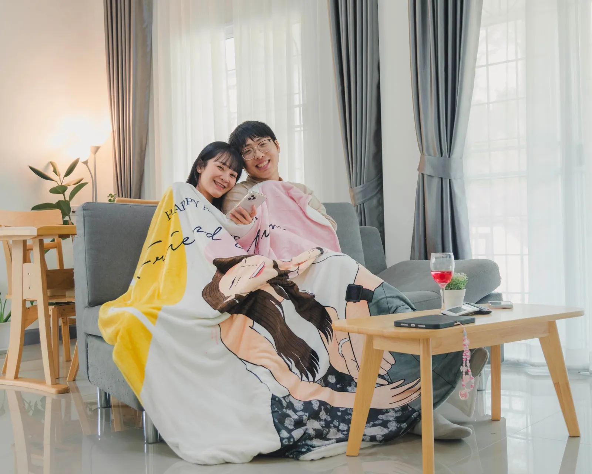

ของขวัญคริสต์มาส 2026: 6 ไอเดียของขวัญสั่งทำจากรูป ให้แฟน เพื่อน และครอบครัว
ใกล้ 25 ธันวาคมทีไร หลายคนเริ่มมองหาของขวัญคริสต์มาสให้แฟน เพื่อน และคนในบ้าน ของสำเร็จรูปหาง่ายแต่ก็ซ้ำกับคนอื่นง่ายเช่นกัน บทความนี้รวมไอเดียของขวัญสั่งทำจากรูปถ่าย แยกตามผู้รับ พร้อมราคาจริงของร้านอุ่นไอรัก คำอวยพรคริสต์มาสสำหรับเขียนการ์ด และวันที่ควรสั่งให้ทันค่ะ

1. ของขวัญคริสต์มาสให้แฟน: ผ้าห่มสกรีนรูปคู่
ปลายปีอากาศเริ่มเย็น ผ้าห่มสกรีนรูปคู่เต็มผืนจึงเป็นของขวัญที่ได้ใช้จริงทุกคืน ผ้านุ่ม ซักเครื่องได้ และมาพร้อมกล่องของขวัญกับการ์ด เปิดกล่องแล้วมอบได้เลยโดยไม่ต้องห่อเอง ราคาเริ่ม 690 บาท ขนาดใหญ่สุด XL 140x170 ซม. ราคา 1,590 บาท ห่มได้สองคนค่ะ
ถ้าอยากได้ของชิ้นเล็กลง แก้วเก็บอุณหภูมิสกรีนรูปคู่ ราคา 690 บาท ฟรีหลอดสแตนเลส ก็เป็นอีกทางเลือกที่ใช้ได้ทุกวัน
2. ให้เพื่อนสนิท: หมอนไดคัทหน้าเพื่อน

ของขวัญให้เพื่อนสนิทไม่ต้องจริงจังมาก หมอนไดคัทตัดตามรูปหน้าเพื่อนเป็นของที่เปิดกล่องแล้วได้เสียงหัวเราะก่อนคำขอบคุณ ส่งรูปจากมือถือรูปเดียว เราตัดพื้นหลังและจัดแบบให้ดูก่อนผลิต ขนาด 15x15 นิ้ว 333 บาท และ 20x20 นิ้ว 444 บาท ถ้าสั่งให้ทั้งแก๊งพร้อมกันหลายใบ ทักไลน์ถามราคาส่งได้ค่ะ
3. ให้พ่อแม่และครอบครัว: หมอนอิงหรือผ้าห่มรูปครอบครัว
ผู้ใหญ่ในบ้านมักชอบของที่มีรูปลูกหลาน หมอนอิงสกรีนรูปครอบครัววางที่โซฟาได้ทันที ราคา 399 ถึง 549 บาทตามขนาด ถ้าต้องการสกรีนด้านหลังด้วย เพิ่ม 100 บาท ส่วนผ้าห่มสกรีนรูปครอบครัวเหมาะกับห้องนั่งเล่นหรือห้องนอน และมีกล่องของขวัญมาให้พร้อมค่ะ
4. ให้คนรักสัตว์: หมอนไดคัทน้องหมาน้องแมว

เพื่อนหรือแฟนที่เลี้ยงสัตว์มักมีรูปน้องเต็มมือถืออยู่แล้ว ขอรูปที่ชัดที่สุดมาหนึ่งรูป แล้วทำเป็นหมอนไดคัทตัดตามรูปทรงของน้อง เริ่ม 333 บาท เป็นของขวัญที่เจ้าของสัตว์เลี้ยงเก็บไว้นานค่ะ
5. แลกของขวัญที่ออฟฟิศ: แก้วมัคสกรีน

งานเลี้ยงคริสต์มาสที่ออฟฟิศมักกำหนดงบแลกของขวัญไว้ 300 ถึง 500 บาท แก้วมัคสกรีน ราคา 200 บาท เติมขนมหรือกาแฟซองให้ครบงบ เป็นของที่ใครได้ไปก็ใช้ได้ ดูไอเดียแบ่งตามงบและลายสกรีนที่เหมาะกับการจับฉลากได้ในบทความของขวัญจับฉลากปีใหม่ งบ 300 และ 500 บาทค่ะ
6. ของตั้งโชว์เก็บได้นาน: กรอบรูปภาพวาดการ์ตูน

ถ้าอยากให้ของที่ตั้งโชว์ได้ทั้งปี ส่งรูปคู่ รูปครอบครัว หรือรูปกลุ่มเพื่อนมาให้เราวาดเป็นภาพการ์ตูนใส่กรอบพร้อมข้อความ เช่น Merry Christmas 2026 ส่งรูปมาประเมินราคาทางไลน์ได้ฟรีค่ะ
สรุปราคาของขวัญคริสต์มาส
| ของขวัญ | เหมาะกับ | ราคา |
|---|---|---|
| แก้วมัคสกรีน | แลกของขวัญ เพื่อนร่วมงาน | 200 บาท |
| หมอนไดคัท | เพื่อนสนิท แฟน คนรักสัตว์ | เริ่ม 333 บาท |
| หมอนอิงสกรีนรูป | พ่อแม่ ครอบครัว | เริ่ม 399 บาท |
| แก้วเก็บอุณหภูมิ | แฟน หัวหน้า | 690 บาท |
| ผ้าห่มสกรีนรูป พร้อมกล่องของขวัญ | แฟน ครอบครัว | เริ่ม 690 บาท |
| กรอบรูปภาพวาดการ์ตูน | คู่รัก ครอบครัว | สอบถามราคา |
คำอวยพรคริสต์มาส 12 แบบ สำหรับเขียนการ์ดหรือสกรีนลงของขวัญ
- Merry Christmas ขอให้มีความสุขมาก ๆ ในวันคริสต์มาสนี้นะ
- สุขสันต์วันคริสต์มาส ขอให้ทุกวันของเธออบอุ่นเหมือนวันนี้
- Merry Christmas and Happy New Year ขอให้ปีหน้าเป็นปีที่ดีของเรา
- ขอบคุณที่อยู่ข้างกันมาตลอดปี สุขสันต์วันคริสต์มาสนะ
- คริสต์มาสปีนี้ขอให้ได้ทุกอย่างที่อธิษฐานไว้
- สุขสันต์วันคริสต์มาสครอบครัวที่รัก ขอให้อยู่พร้อมหน้ากันแบบนี้ทุกปี
- Merry Christmas เพื่อนรัก ปีหน้าก็ยังต้องเจอกันบ่อย ๆ เหมือนเดิม
- ขอให้ซานต้าเอาแต่เรื่องดี ๆ มาให้ตลอดปี
- ของขวัญชิ้นนี้แทนคำขอบคุณสำหรับทุกอย่างในปีนี้
- สุขสันต์วันคริสต์มาส ขอให้สุขภาพแข็งแรง มีรอยยิ้มทุกวัน
- Merry Christmas ขอให้งานราบรื่น เงินเข้าไม่ขาดมือ
- คริสต์มาสนี้อากาศเย็น ขอให้ของขวัญชิ้นนี้ทำให้อุ่นขึ้นนะ
ข้อความเหล่านี้สกรีนลงหมอน ผ้าห่ม หรือแก้วได้ แจ้งข้อความที่ต้องการมาพร้อมรูปทางไลน์ เราจัดวางแบบให้ดูก่อนผลิตทุกชิ้นค่ะ
ต้องสั่งภายในวันไหนให้ทันคริสต์มาส
ร้านใช้เวลาผลิต 3–4 วันหลังยืนยันแบบ แล้วบวกเวลาจัดส่งอีก เดือนธันวาคมคิวผลิตแน่นทุกปี จึงแนะนำให้สั่งภายในวันที่ 15 ธันวาคม เพื่อให้ของถึงมือก่อนวันที่ 25 ถ้าเลยจากนั้นแล้ว ทักไลน์แจ้งวันที่ต้องการมาก่อนได้ค่ะ เราจะบอกตรง ๆ ว่าทันหรือไม่ทัน และแจ้งวันส่งให้ตั้งแต่ตอนยืนยันออเดอร์
สั่งของขวัญคริสต์มาส ส่งรูปมาทาง LINE ได้เลย
ทำแบบให้ดูฟรี แจ้งราคาและวันส่งชัดเจนก่อนผลิตค่ะ
แอด LINE @aunirakคำถามที่พบบ่อยเรื่องของขวัญคริสต์มาส
ของขวัญคริสต์มาสให้แฟน ควรให้อะไรดี
ของที่มีรูปของทั้งคู่และได้ใช้ทุกวัน เช่น ผ้าห่มสกรีนรูปคู่ เริ่ม 690 บาท หมอนไดคัทหน้าแฟน เริ่ม 333 บาท หรือแก้วเก็บอุณหภูมิสกรีนรูปคู่ 690 บาท ค่ะ
ของขวัญคริสต์มาสงบไม่เกิน 500 บาท มีอะไรบ้าง
แก้วมัคสกรีน 200 บาท หมอนไดคัท 15x15 นิ้ว 333 บาท หมอนไดคัท 20x20 นิ้ว 444 บาท และหมอนอิงสกรีนรูป 399 ถึง 499 บาท ค่ะ
มีกล่องของขวัญให้ไหม
ผ้าห่มสกรีนรูปมาพร้อมกล่องของขวัญและการ์ด พร้อมมอบได้เลย ส่วนสินค้าอื่นสอบถามเรื่องการห่อได้ทางไลน์ @aunirak ค่ะ
ต้องสั่งภายในวันไหนให้ทันคริสต์มาส
การผลิตใช้ 3 ถึง 4 วันหลังยืนยันแบบ บวกเวลาจัดส่ง ช่วงธันวาคมคิวแน่น แนะนำสั่งภายในวันที่ 15 ธันวาคม ถ้าเลยจากนั้นทักไลน์แจ้งวันที่ต้องการมาก่อนได้ค่ะ
อ่านต่อ / สินค้าที่เกี่ยวข้อง
บทความ: ของขวัญจับฉลากปีใหม่ งบ 300 และ 500 บาท
บทความ: ของขวัญปีใหม่ ให้ผู้ใหญ่ เจ้านาย และลูกค้า
บทความ: ของขวัญวันเกิด ไม่ซ้ำใคร
ผ้าห่มสกรีนรูป เริ่ม 690.- · หมอนไดคัท เริ่ม 333.- · หมอนอิงสกรีนรูป เริ่ม 399.- · แก้วสกรีน เริ่ม 200.- · กรอบรูปการ์ตูน